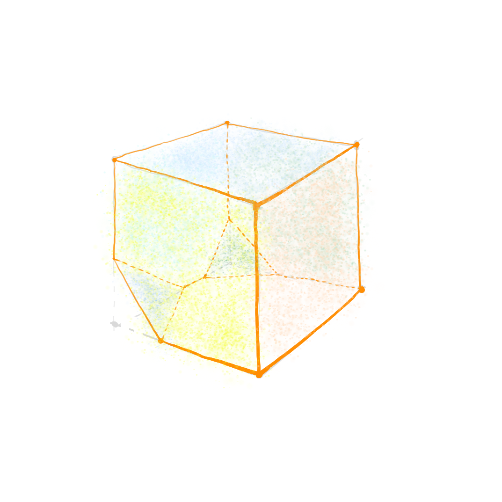

Polyhedrons and their Many Faces
This note was inspired by the problem 1 in Moscow Mathematical Olympiad 1994.
Problem
Suppose you are sick of the tedious sameness in your surroundings and decide to enlighten your days with a polyhedron with as many different faces as possible, but with the least number of edges as well. What are you going to do?
Analysis
To begin with, let’s think how many unique faces we can have given an arbitrary convex polyhedron. Take a face with the greatest number of edges, and suppose that this number is n. All the other faces have an edge count in the range from 3 to n inclusive.
By the pigeonhole principle, since there are (n − 3)+1 = n − 2 possible unique faces, we know that at least two faces have the same number of edges.
Now, let’s find a polyhedron with the least number of edges such that it has no three faces with the same edge count.
We cannot make a proper polyhedron with just two triangles and two rectangles. Do not surrender! Take two pentagons and glue them together side by side. Then we just need two triangles and two quadrilaterals to make our polyhedron! In this way we obtain a tetrahedron with two adjacent corners truncated.
Can we truncate some other polyhedron? Sure! Let’s try and truncate a cube.
|
|
 |
In this way, we obtain a figure consisting of two triangles, two squares, two pentagons and two hexagons.
Can you come up with other examples? Please let me know!
Finding Relatives
Now, let’s think now about a related problem from the Tournament of Towns 1999-2000.
Suppose you have a polyhedron with 10n faces, where n is some positive integer. How many faces with the same number of edges can you find?
It seems that these faces-relatives must inflict some limit on the overall structure of our polyhedron. Let’s consider how they affect angles of the polyhedron.
Take an arbitrary convex polyhedron. How can we estimate its average exterior angle? Since the polyhedron is convex, all the angles at some vertex A sum up to less than 2π (otherwise, we could flatten out the vertex). Therefore, if there are k angles sharing A as their endpoint, then the sum of the corresponding exterior angles is more than (k − 2)π. The average size of an exterior angle at A is thus $\alpha(A) > \frac{(k-2)\pi}{k} \geq \frac{\pi}{3}$, since k ≥ 3, which means that α(A) is greater than $\frac{\pi}{3}$.
Now, assume that there exists some 10n-hedron with not more than n faces which are triangles, not more than n faces which are rectangles and so on. Since there are 10n faces, the number of edges is not less than (3 + 4 + … + 12)n = 75n. The sum of exterior angles of each face is 2π, so the total sum of the exterior angles is 20πn. Hence, the average outer angle must be less than $\frac{20\pi n}{75n} = \frac{4\pi}{15}$, which is less than $\frac{\pi}{3}$. Hence, we arrive at a contradiction, thus proving that there exist at least n faces with the same number of edges.
Can you figure out when the same proof works if we replace 10n with kn, where k is some positive integer?
References
- Толпыго, Алексей. Тысяча задач Международного математического Турнира городов. 2017.